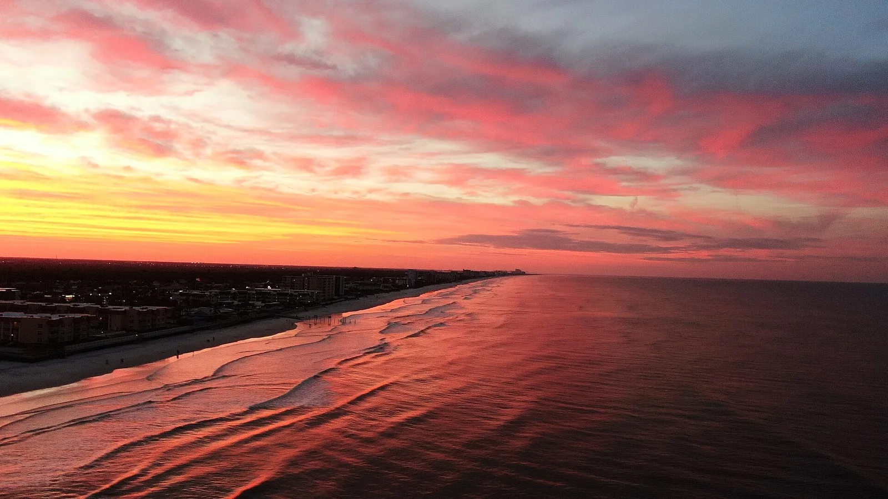

New Smyrna Beach
Floride, USA · surf, bodyboard, baignade

Une plage à vagues courtes et fréquentes, très accessible — et le lieu qui concentre le plus de morsures de requins au monde, presque toutes bénignes et liées à l’eau trouble.
- Lieu
- Floride, USA
- Niveau
- Débutant
- Activités
- surf, bodyboard, baignade
- Type d'eau
- Mer / océan
- Coordonnées
- 29.02, -80.90 (position approximative du secteur)
Dangers à connaître
- Morsures fréquentes près de l’embouchure : ne surfe pas dans l’eau trouble.
- Courants dans la passe de Ponce Inlet.
- Plage très fréquentée.
Le conseil d'Ocean Buddy
Éloigne-toi de la jetée et de l’embouchure, et évite l’eau trouble et les bancs de poissons.
Ouvrir dans Ocean Buddy Télécharger sur l'App Store
Source : Description historique Ocean Buddy · vérification externe en attente.